Зеркало и
идентификация
Что роднит эти отражения?
Между крайними кадрами этой плёнки — семь десятилетий: от нуара Уэллса до комикс-трагедии. Держит их вместе один сюжетный узел: герой встречает собственный образ — в зеркале, в гриме, в чужом лице — и образ оказывается сильнее хозяина.
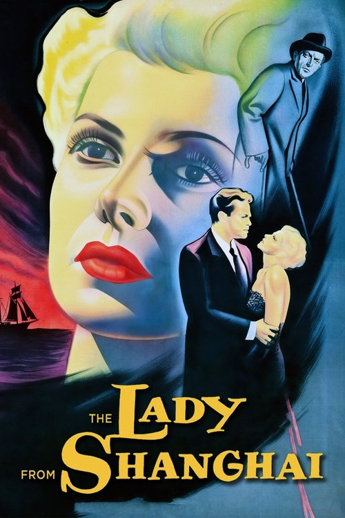
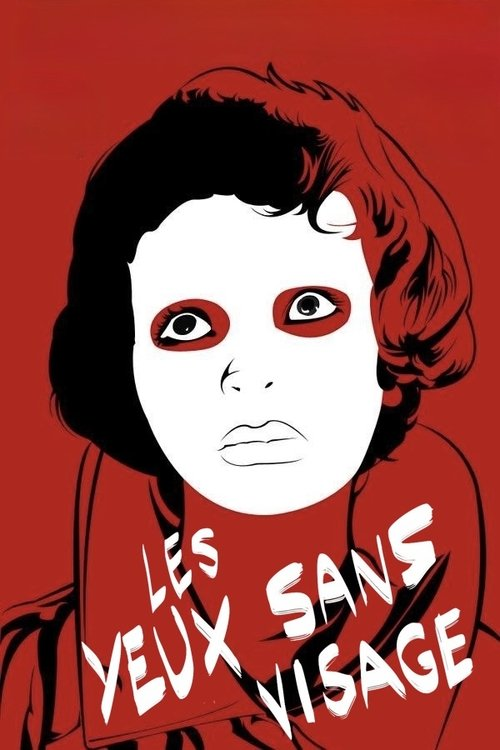

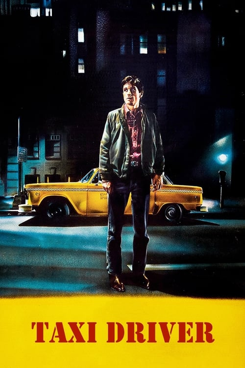
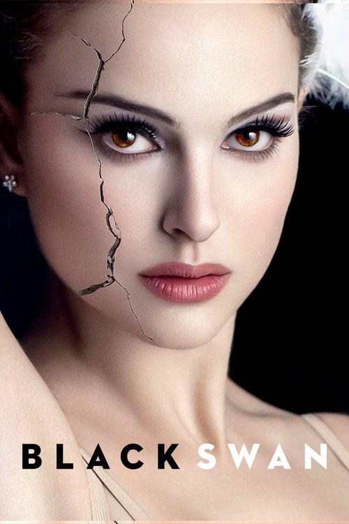
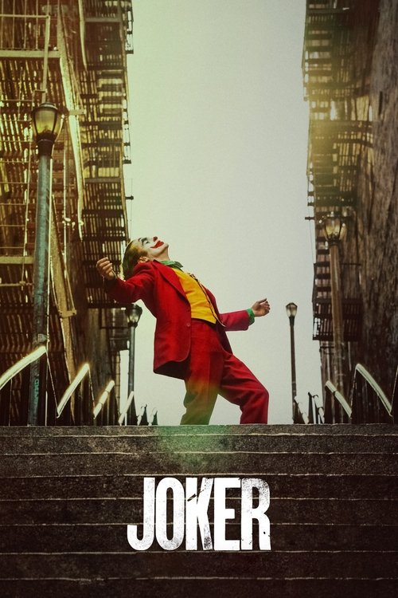
Главный вопрос
Почему зритель узнаёт себя в чужом лице? Почему тёмный зал так легко превращает наблюдателя в участника?
Ответ этой лекции — понятие идентификации: механизм, которым «я» вообще возникает. Дорога пройдёт от Фрейда через зеркальную сцену Лакана к Метцу — и к четырём фильмам, где сборка «я» показана как сюжет.
«Я» складывается из идентификаций — слепков с тех, кем человек хотел быть.
Первая идентификация — не с человеком, а с отражением: целостным и чужим.
Кино воспроизводит зеркальную сцену и потому работает как машина идентификации.
Метод: три вопроса зеркала
Какой образ собран?
С чем герой себя отождествляет: отражение, маска, роль, вырезка из газеты.
Кто его признаёт?
Чей взгляд удерживает образ: мать, толпа, пресса, камера. Образ без свидетеля рассыпается.
Где трещина?
Момент, когда образ перестаёт совпадать с телом, — там сюжет и решается.
Кино разбило зеркало первым
Теория зеркала и зеркальный сюжет кино растут параллельно. Два узла в центре шкалы: Уэллс расстреливает зеркальный лабиринт за два года до того, как Лакан читает в Цюрихе канонический текст о зеркале.
Возвращение к Фрейду
Психиатр по образованию, Лакан входит в психоанализ через диссертацию о паранойе (1932) и дружбу с сюрреалистами. Его лозунг — «возвращение к Фрейду»: не смягчать открытие бессознательного, а читать его буквально, через язык.
С 1953 года — публичный семинар, который четверть века собирает философов, лингвистов и будущих теоретиков кино. Стиль намеренно тёмный: текст сопротивляется читателю, как бессознательное — сознанию.
Понятия, готовые к экрану
Зеркало, взгляд, желание, воображаемое — словарь Лакана словно создан для тёмного зала. В 1970-е Метц, Бодри и Малви строят на нём целую дисциплину: экран и есть зеркало, вопрос лишь — чьё.
«Я» — осадок идентификаций
«Быть как», а не «иметь»
Идентификация — самая ранняя эмоциональная связь с другим: ребёнок не хочет обладать отцом, он хочет быть отцом. Выбор объекта отвечает на вопрос «кого любить», идентификация — «кем быть».
Слепки оставленных связей
Характер «я» — история его привязанностей: утраченный объект не исчезает, а встраивается внутрь. Личность оказывается архивом тех, кем человек когда-то хотел стать.
Лакан делает следующий шаг и радикализует схему: первая идентификация происходит ещё раньше — и не с человеком, а с образом.
Зеркальная сцена
Образу веришь больше,
чем телу
Человеческий детёныш рождается «недоношенным»: в полгода он не ходит, не сидит уверенно, не управляет руками. Его телесный опыт — разрозненные куски: голод здесь, боль там, рука — отдельный гость.
И вот в зеркале этот раздробленный опыт встречает картинку: собранную, симметричную, послушную. Картинка опережает возможности тела — потому она и торжествует. «Я» строится не изнутри, из ощущений, а снаружи, по лекалу образа.
Незрелость при рождении: моторика догонит образ лишь через годы.
Целостная форма в зеркале — первый «проект» будущего «я».
Образ, с которым «я» отныне сверяется — и никогда не совпадает.
Узнавание — это ошибка узнавания
В самом радостном «это — я» спрятано «это — не я»: ребёнок отождествляется с тем, чем не является, — с плоской, зеркально перевёрнутой, внешней картинкой.
Reconnaissance
Образ дарит единство: впервые можно сказать «я» и указать на что-то целое. Без этой сцены субъект не собрался бы вовсе.
Méconnaissance
Плата за единство — самообман: «я» отныне ищет себя там, где его нет, — в образах, ролях и чужих взглядах. Ошибка не поломка системы, а её фундамент.
Идеальное-я и я-идеал
Каким себя вижу
Образ из зеркала: целостный, любимый, всемогущий. Живёт в регистре воображаемого; питает нарциссизм и требует постоянного подтверждения.
Откуда на себя смотрю
Точка взгляда, из которой образ оценивается: родительская, социальная, символическая. Не «каким хочу быть», а «чьим глазам должен понравиться».
Пара понятий станет рабочей в кейсах: у героя всегда есть образ — и всегда есть инстанция, чьё признание он выпрашивает. Кино умеет показывать обе стороны: лицо в зеркале и взгляд, который его судит.
Воображаемое · Символическое · Реальное
Регистр образа
Зеркало, подобие, целостность. Здесь живут идентификация, нарциссизм и вся оптика этой лекции.
Регистр языка
Имена, законы, родство — сеть, в которую субъект вписан до рождения. Отсюда смотрит я-идеал.
Регистр невозможного
То, что не отражается и не называется; прорывается травмой. Понадобится в Лекции 12 — «Экран смотрит в ответ».
Соперник — мой образ
в чужом теле
Годом раньше цюрихского доклада Лакан описывает обратную сторону зеркальной сборки: агрессивность. Если «я» держится на внешнем образе, всякий, кто на этот образ похож или на него претендует, — угроза самому существованию.
Детский транзитивизм — готовая иллюстрация: ребёнок бьёт товарища и искренне жалуется, что ударили его. Граница между «я» и подобным ещё не проведена — и охраняется кулаками.
Насилие у зеркала
Трэвис с револьвером перед отражением, Нина против двойника в репетиционном зале: агрессия в этих сценах направлена не на другого — на соперника-образ.
ЭкранЭкран
Кинозал повторяет сцену у зеркала
Тело обездвижено в кресле — как младенец, ещё не владеющий собой.
Собственное тело исчезает из виду; остаётся один светящийся прямоугольник.
Глаз всевластен: видит всё, отовсюду, монтаж дарит невозможные точки зрения.
Удовольствие сеанса сродни радости у зеркала: мир собран, целостен и послушен взгляду.
Аппарат уже готовил ответ
Тёмный зал, неподвижный зритель, проекция за спиной — «Идеологические эффекты базового киноаппарата» описали устройство сцены. Лекция 03 разбирает сам аппарат; здесь важно, кого он в этой сцене производит.
Зеркало без моего тела
Фильм похож на зеркало. Но есть одна вещь, и только одна, которая в нём никогда не отражается: тело самого зрителя.
Экран — зеркало, из которого изъят смотрящий. Значит, буквального самоузнавания в кино нет — и тем не менее зритель «влипает» в фильм. С кем же он отождествляется, если его самого в кадре нет?
Ответ Метца — на следующем слайде: идентификаций две, и главная из них — вовсе не с героем.
С кем совпадает зритель
С камерой
Зритель отождествляется с самим актом видения: с точкой, из которой мир дан. Незаметная, тотальная, работает в любом фильме — даже без героев.
С персонажем
Знакомое «болею за героя»: совпадение с лицом, телом, положением в сюжете. Надстраивается над первичной и без неё невозможна.
Сильный ход Метца: главное отождествление — не эмоциональное, а оптическое. Прежде чем полюбить героя, зритель уже занял его мир как собственный взгляд. Кто владеет этой оптикой — вопрос следующей лекции.
Идентификация на уровне кадра
Субъективная камера
Кадр от первого лица: оптика героя выдана зрителю напрокат — идентификация в чистом виде.
Взгляд + ответный кадр
Герой смотрит — монтаж показывает что. Зритель вшивается в цепочку взглядов (шов, кросс Л03).
Крупный план лица
Лицо во весь экран — зеркальная поверхность фильма: на него проецируется то, чего кадр не показывает.
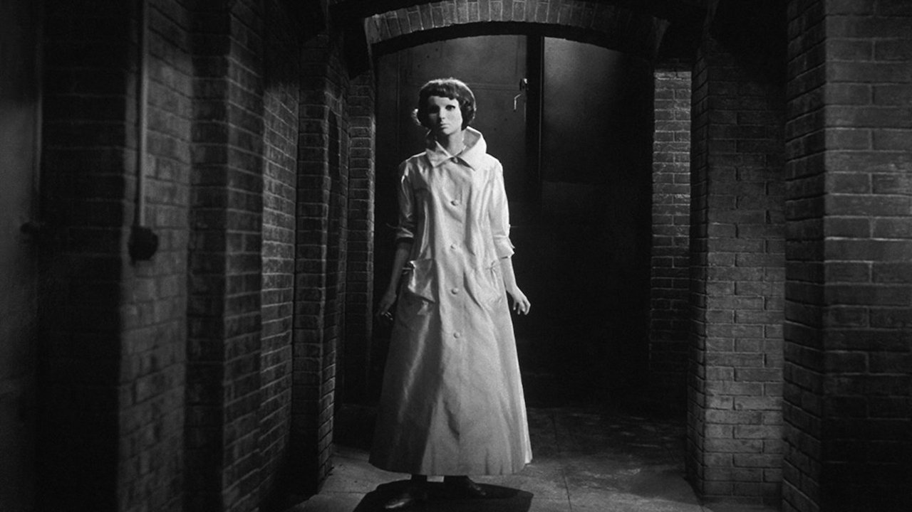
Глаза без лица
Хирург крадёт лица чужих девушек, чтобы вернуть дочери её собственное. Стадия зеркала, прочитанная от противного: что остаётся от «я», когда образ отнят.
Ужас, снятый как сказка
Сооснователь Французской синематеки берётся за «низкий» жанр и обходит сразу три цензуры: французскую (кровь), немецкую (безумные хирурги) и английскую (жестокость к животным). Сценарий адаптируют Буало и Нарсежак — авторы романа, из которого выросло «Головокружение».
На Эдинбургском фестивале 1960 года зрители теряют сознание на сцене пересадки лица; английская критика фильм громит. Реабилитация займёт десятилетия.
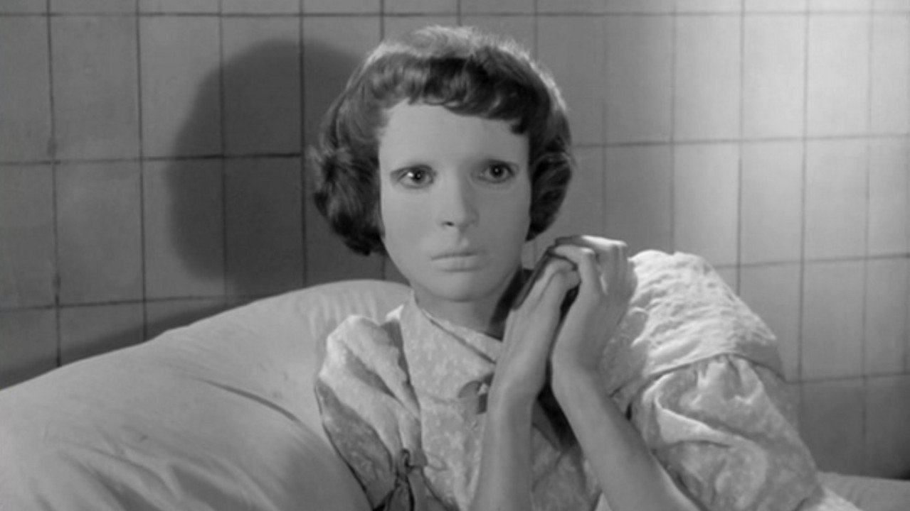
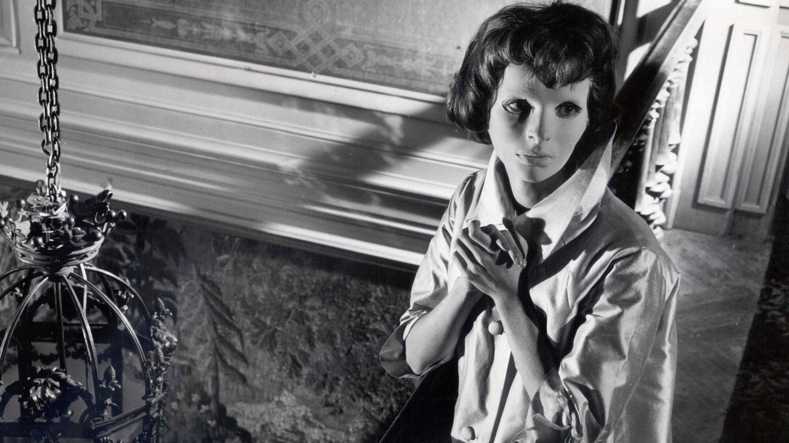
Лицо, которого нет
Отец убрал из дома все зеркала; Кристиана скользит по комнатам в белой маске, и блестящие поверхности — нож, стекло шкафа — дразнят её обрывками отражения. Каждая дверь — рама без портрета.
Анти-лицо крупным планом
Франжю сталкивает две фактуры: сказочную — маска, голуби, музыка Жарра, — и документальную: операция снята с хирургической невозмутимостью, без единой монтажной уловки. Маска Эдит Скоб гладка настолько, что крупный план перестаёт работать: лицо есть, а выражения нет — экран лишается своей «зеркальной поверхности».
Отнятый крупный план
Кино держится на лице; фильм последовательно его изымает. Зрителю некуда проецировать — идентификация буксует вместе с героиней.
«Я» без образа
Разборка вместо сборки
Лакан описал, как образ учреждает «я»; Франжю показывает обратный ход: без отражения Кристиана перестаёт быть кем-то — остаётся голос и глаза. Финал с голубями — не освобождение, а уход из мира людей: вне образа социального «я» нет.
Маска как чужой проект
Новое лицо шьёт отец — по своему образу дочери. Идеальное-я здесь буквально изготавливается другим человеком; отторжение трансплантата читается как бунт тела против навязанного образа.
Образ: отнят и заменён маской · Признание: взгляд отца, что видит «проект», а не дочь · Трещина: тело отторгает пересаженное лицо.
Как читали «Глаза без лица»
Скандал и обмороки в Эдинбурге; британская критика клеймит фильм как безвкусицу на грани допустимого.
Первая монография о Франжю: не хоррор, а чёрная поэзия — наследница сюрреализма и Кокто.
Art-horror: фильм живёт на границе высокого и низкого, и сила его — именно в отказе выбирать.
Шок как свидетельство: изувеченное лицо несёт память войны и оккупации — травму, о которой Франция молчала.
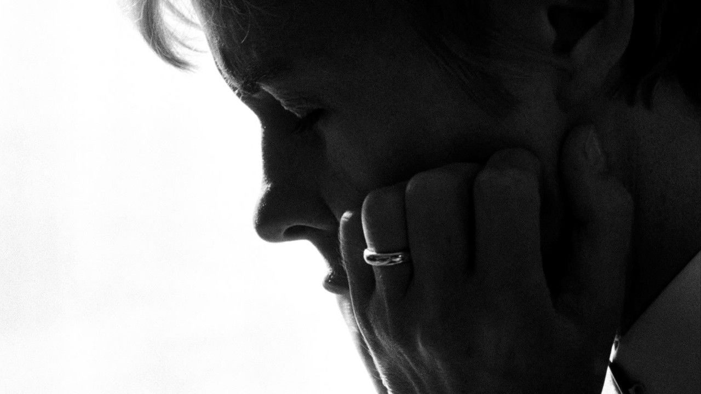
Персона
Актриса замолкает посреди спектакля; болтливая сиделка увозит её на остров. К финалу непонятно, где кончается одна женщина и начинается другая.
Замысел на больничной койке
Бергман пишет сценарий, восстанавливаясь после пневмонии, и позже назовёт картину фильмом, который спас ему жизнь. Название взято у Юнга: persona — социальная маска, повёрнутая к миру.
Пролог напоминает, из чего сделано кино: угольная дуга проектора, обрывки немой комедии, гвоздь в ладони — и мальчик, гладящий гигантское размытое лицо на экране. Фильм о слиянии начинается с ребёнка перед образом.
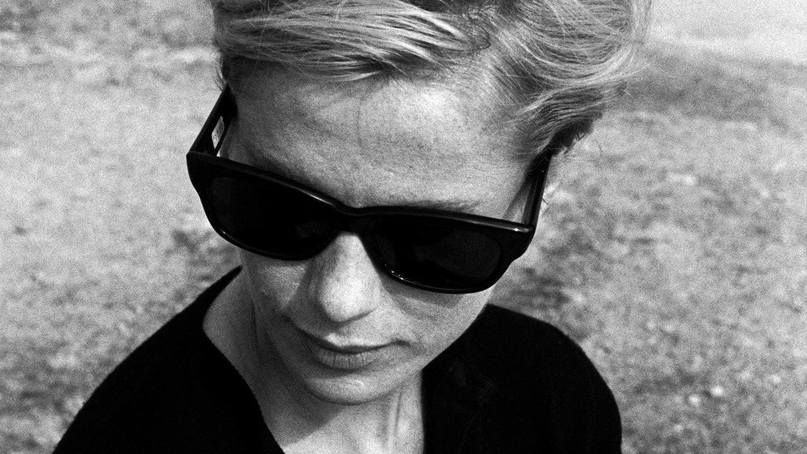
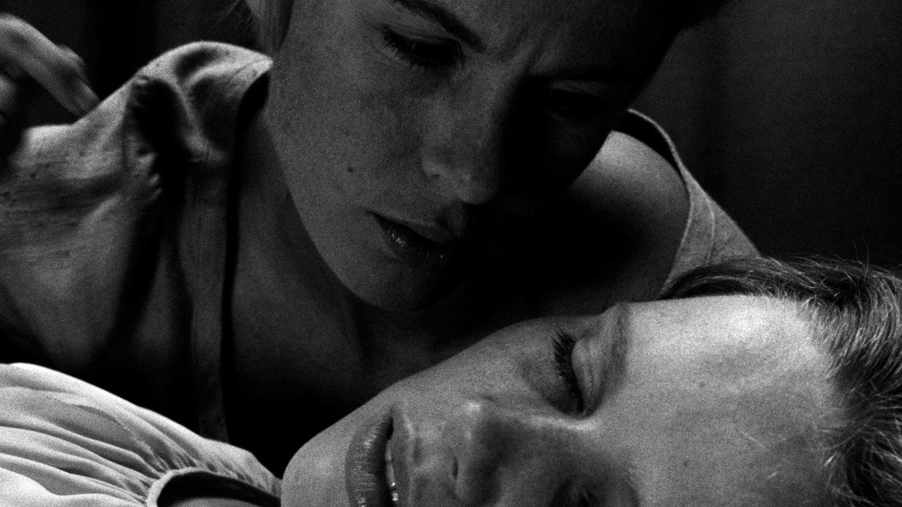
Пол-лица плюс пол-лица
Монолог Альмы о материнстве Элисабет звучит дважды: сначала камера смотрит на слушающую, затем — на говорящую. На третьем заходе экран складывает половины двух лиц в одно — и это одно лицо не принадлежит никому.
Разрыв плёнки посередине
Нюквист снимает лица как местность: свет делит их на освещённую и тёмную половины задолго до финальной склейки — композиция готовит слияние исподволь. В середине фильма, на пике жестокости, кадр вспыхивает и плёнка «рвётся»: медиум не выдерживает и напоминает о себе. Иллюзия рушится — и собирается заново.
Композиция-предсказание
Задолго до спецэффекта героини делят кадр так, что зритель уже видел их одним лицом — просто не отдавал себе отчёта.
Идентификация без остатка
Речь входит в молчание
Альма говорит за двоих — и постепенно занимает место молчащей: носит её халат, отвечает за неё мужу, рассказывает её биографию как свою. Молчание Элисабет работает как зеркальная гладь: в неё можно поместить что угодно.
Растворение границы
Идентификация, доведённая до предела, съедает идентифицирующегося: «я» Альмы не обогащается чужим образом, а замещается им. Финальное «ничего» Элисабет — единственное слово, которое ещё различает двоих.
Образ: чужое лицо на месте своего · Признание: молчание, что принимает всё · Трещина: склейка половин, не принадлежащая никому.
Как читали «Персону»
Против интерпретации: фильм не ребус о «настоящем» сюжете, а вариации на тему удвоения; сила его — в непрозрачности.
Этическое чтение: молчание Элисабет — отказ от лжи ролей; Альма гибнет, потому что честность заразительна и невыносима.
Mindscreen: экран показывает не события, а работу сознания; склейка лиц — грамматика от первого лица, у которого нет имени.
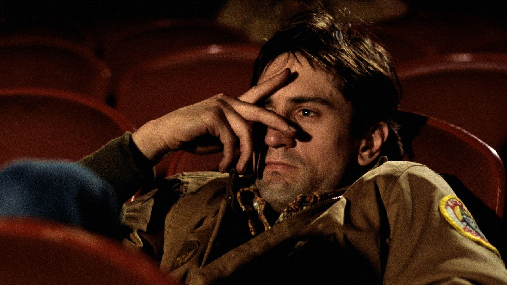
Таксист
Бессонный ветеран возит ночной Нью-Йорк и собирает себе «я» из осколков: армейская куртка, дневник, револьвер, чужая избирательная кампания. Город признает его героем — по ошибке.
Сценарий из запертой машины
Пол Шрейдер пишет «Таксиста» на дне собственной жизни — без дома, с язвой, в кинотеатрах на ночь. Он называет источники прямо: дневники Артура Бремера, «Записки из подполья» Достоевского и формула «одинокий человек Бога».
Трэвис — рассказчик-дневник: город дан через его лобовое стекло и его закадровый голос. Зритель заперт в той же оптике — первичная идентификация работает на полную мощность.
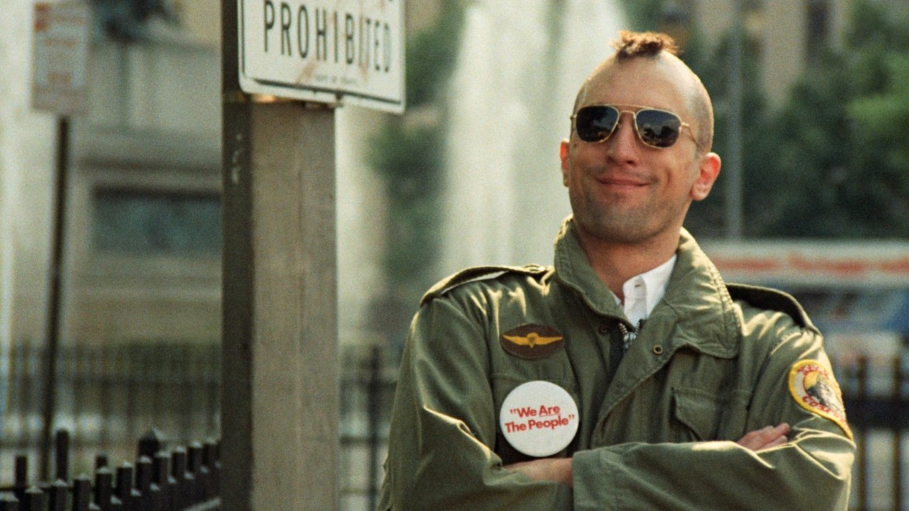
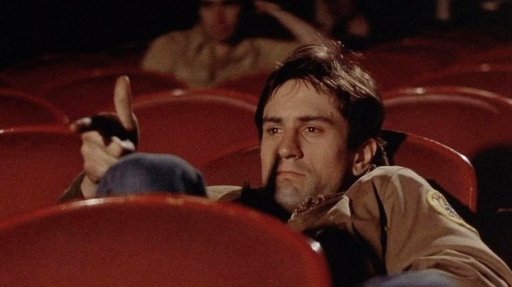
Репетиция себя
Трэвис выхватывает револьвер перед зеркалом и заговаривает с отражением: «Ты мне говоришь?» В сценарии стояла ремарка «смотрит в зеркало» — монолог Де Ниро импровизирует. Герой репетирует того, кем хочет быть, — и соперник у него один: собственный образ.
Камера отводит взгляд
Фильм смотрит на мир глазами Трэвиса — но в решающие моменты камера отстраняется: медленный отъезд в пустой коридор во время телефонного разговора, взгляд сверху на бойню в финале. Оптика, которую зритель обжил, вдруг отказывается сопровождать героя — идентификация даёт зазор ровно там, где Трэвис теряет себя.
Зеркало заднего вида
Глаза Трэвиса в узкой полосе зеркала — лейтмотив фильма и его последний кадр: тревожный взгляд, брошенный на самого себя.
Идеальное-я из газетных вырезок
Морпех → мститель → герой
Трэвис примеряет образы, как куртки: солдат, жених, спаситель девочки. Каждый собирается перед зеркалом и проверяется на чужом взгляде — Бетси, пассажирах, экране порнозала. Агрессия 1948 года тут как по учебнику: револьвер направлен в отражение.
Большой Другой читает газеты
Финальная стена вырезок и письмо родителей Айрис — признание пришло: город назвал Трэвиса героем. Случайность этой развязки — самая жуткая мысль фильма: тот же человек с тем же револьвером мог войти в историю убийцей сенатора.
Образ: мститель-спаситель, собранный перед зеркалом · Признание: пресса и родительское письмо · Трещина: последний взгляд в зеркало заднего вида.
Как читали «Таксиста»
«Underground Man»: городской ад глазами подпольного человека; фильм-лихорадка, где отвращение и влечение неразличимы.
Автокомментарий: история самоспасения через насилие — про одиночество, а не про город; финал сознательно двусмыслен.
Идеологическое чтение: «героизация» Трэвиса — симптом Америки, которой нужен миф об очищающем насилии.
Ревизия BFI: белая мужская паника, расовый подтекст и вопрос, чей взгляд фильм на самом деле обслуживает.
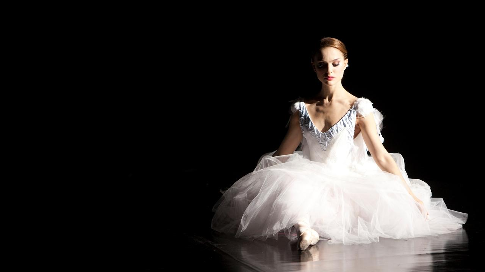
Чёрный лебедь
Балерина получает партию, требующую стать двумя лебедями сразу. Репетиционные зеркала множат её, пока отражение не начинает жить само.
Профессия как машина идеала
Аронофски скрещивает «Лебединое озеро» с «Двойником» Достоевского и помещает действие в мир, где зеркало — рабочий инструмент: балерина проводит жизнь между станком и собственным отражением, а «идеальная форма» — прямое производственное требование.
Мать-художница дорисовывает картину: стены комнаты Нины увешаны её портретами — образ дочери изготавливается семьёй так же буквально, как маска у Франжю.
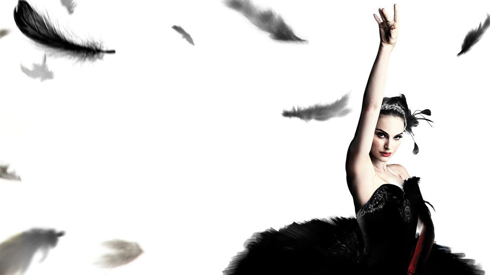
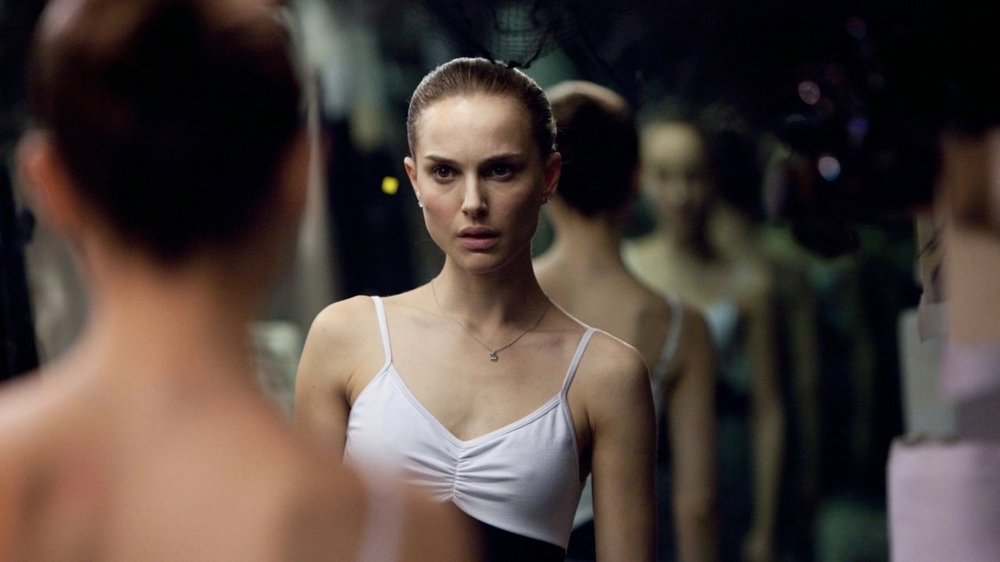
Зеркало срывается с поводка
В ночной репетиции отражение Нины на долю секунды отстаёт от её движений — потом оборачивается, когда она стоит спиной. Двойники множатся: попутчица в метро, лицо соперницы в зеркале гримёрки, чёрный лебедь в собственных зрачках.
Затылок героини, глаза зрителя
Камера ходит за Ниной след в след, как в документальной хронике, — и этот же приём делает каждое зеркало ловушкой: в кадре с затылком героини любое отражение может оказаться «неправильным». Цифровая ретушь встроена в бытовые планы, поэтому граница между галлюцинацией и репортажем неотличима технически.
Зеркало как монтажный шов
Каждая подмена спрятана в отражении: фильм врёт зрителю ровно теми поверхностями, которым героиня привыкла верить.
«I was perfect»
Форма, что требует всё
Белый лебедь — идеал, изготовленный матерью и балетной школой; чёрный — идеал, заказанный балетмейстером. Нина не выбирает между ними: оба — чужие проекты, и оба требуют исчезновения её собственного тела — через голод, боль и кровь.
Совпасть с образом = умереть
Финальное «я была совершенна» — предельная méconnaissance: полное совпадение с идеалом достигается в момент смертельной раны. Лакан предупреждал: образ всегда «впереди» тела; догнать его можно только перестав быть телом.
Образ: лебедь, белый и чёрный разом · Признание: аплодисменты, мать в зале, «little princess» балетмейстера · Трещина: осколок зеркала в животе.
Как читали «Чёрного лебедя»
Восторг с оговорками: наследник «Красных башмачков» и «Отвращения» — или мелодрама, наряженная в артхаус?
Критика изнутри профессии: фильм романтизирует истязание тела и продаёт миф о безумии как цене искусства.
Скандал с дублёршей Сарой Лейн: чьё тело танцует «идеал» на экране — вопрос фильма, повторившийся в его производстве.
Лакановские чтения: хрестоматия воображаемого — идеальное-я, двойник, агрессия к сопернице-образу.
Четыре режима идентификации
Глаза без лица
Образ отнят — «я» выпадает из мира людей. Идентичность держится на отражении.
Персона
Чужой образ поглощает собственный: идентификация без остатка стирает границу.
Таксист
«Я» смонтировано из осколков и ждёт признания; какое признание придёт — лотерея.
Чёрный лебедь
Совпасть с образом можно лишь целиком — то есть перестав быть телом.
Половины съезжаются, как лица в «Персоне», — и складываются в одно правило: кино рассказывает про идентификацию, потому что само на ней работает. Осталось проверить правило на самом массовом примере.
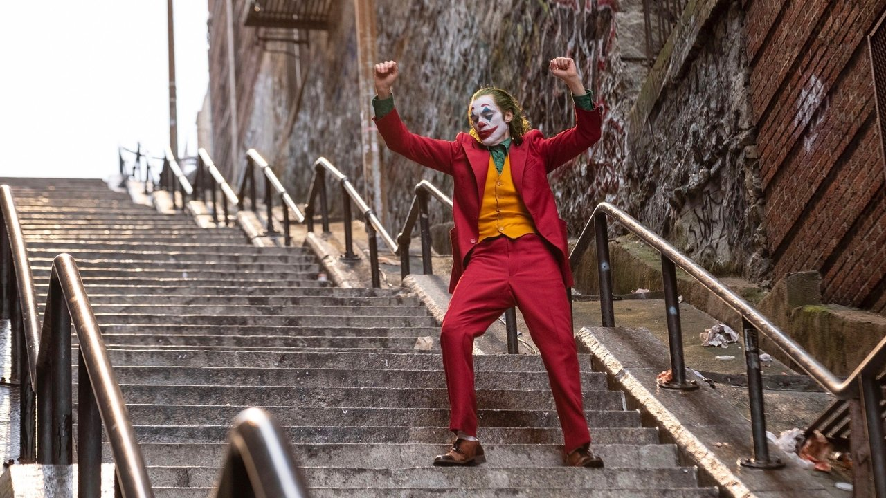
Джокер
Неудачливый комик собирает себе лицо из грима, походку из танца и имя из телеэфира. Город подхватывает образ — и возвращает его тысячей масок.
Лицо, нарисованное поверх
Фильм открывается зеркалом гримёрки: Артур растягивает себе улыбку пальцами — образ буквально наносится на тело, и тело сопротивляется (неуправляемый смех — симптом, идущий поперёк маски).
Танец на лестнице — переломная сцена сборки: походка забитого человека переписана в хореографию. Лестница, по которой Артур годами поднимался согнувшись, становится сценой спуска нового персонажа.
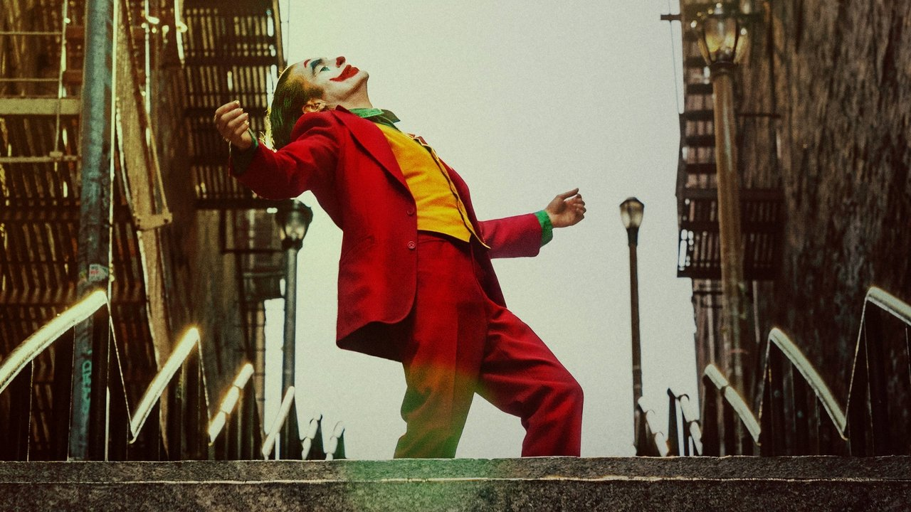
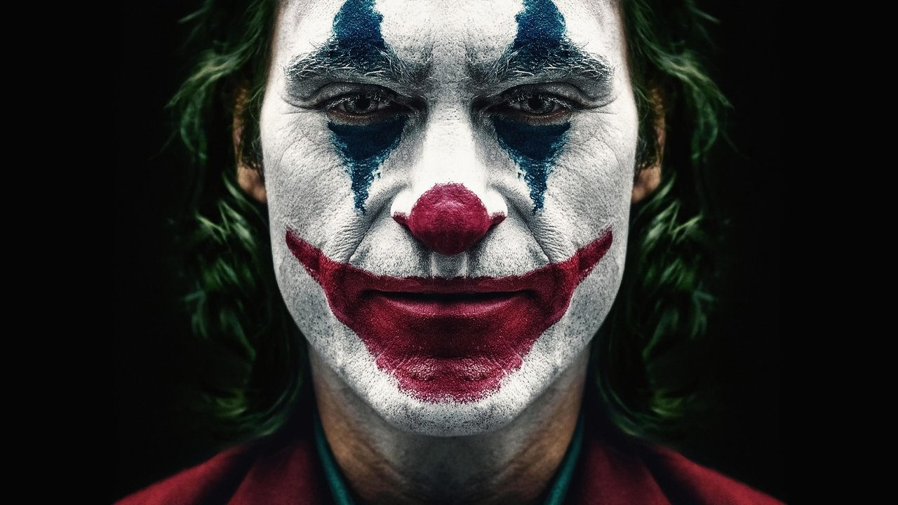
Признание в прямом эфире
Имя «Джокер» Артуру выдаёт телеведущий — в насмешку. Экран, перед которым он рос, фантазируя об отцовском объятии Мюррея, оказывается инстанцией признания: я-идеал с телевизионной заставкой. Де Ниро по ту сторону стола — ироничное зеркало «Таксиста».
Идентификация выходит на площадь
Все ступени в одном фильме
Утрата (таблетки отменены, биография матери рушится), сборка (грим и танец), признание (эфир, толпа в масках). Кода собирает режимы всех четырёх кейсов в один сюжет — потому фильм и сработал как учебник.
Границы коды
Клиническая достоверность здесь не предмет разбора: «безумие на экране» — территория Лекции 09. Кода читает только механику образа: как масскульт превращает частную сборку «я» в тиражируемую маску.
Образ: клоун, нарисованный поверх Артура · Признание: телеэфир и город в таких же масках · Трещина: смех, который телу не подчиняется.
Что метод даёт и где буксует
Язык для главного фокуса кино
Стадия зеркала объясняет, почему зритель «влипает» в экран, и даёт кейсам точный словарь: образ, признание, трещина. На этой схеме стоит вся теория 1970-х — Бодри, Метц, Малви.
Три поправки
Эмпирия: психология развития не подтверждает «сцену» как одномоментное событие — это скорее миф основания. Метц сам признал: экран не возвращает тело зрителя. И главное — Копьец (1989): зеркало не экран, кинотеория взяла у Лакана лишь раннюю треть; ответ — в Лекции 12.
Стадия зеркала — ежедневно
Фронтальная камера сделала зеркальную сцену бытовой практикой.
Селфи с фильтром — идеальное-я, изготовленное алгоритмом; лайк — признание большого Другого, поставленное на счётчик; аватар и дипфейк — образ, окончательно отделившийся от тела. Лекала Лакана ложатся на ленту соцсети без единой натяжки — тревожно точно.
Картинка снова «впереди» тела — и тело снова обязано догонять (индустрия коррекции под селфи).
Признание стало числом: я-идеал с метрикой обновления.
Отражение без хозяина: чужое лицо, живущее собственной жизнью, — двойник Ранка в новом носителе.
Карта курса
К семинару
Сцена × три вопроса зеркала
Одна зеркальная или «предзеркальная» сцена из фильмов лекции: какой образ собран, кто признаёт, где трещина. 300–400 слов, без пересказа фабулы.
Один из двух вопросов
«Селфи-камера как стадия зеркала: где аналогия работает, а где ломается?» либо «Чьё прочтение „Таксиста“ убедительнее: Кейл, Шрейдер, Вуд, Таубин?» 800–1000 слов.
Просмотр
«Головокружение» и «Гильда» — с вопросом на полях: кому в этих фильмах принадлежит взгляд камеры и что он делает с той, на кого направлен.